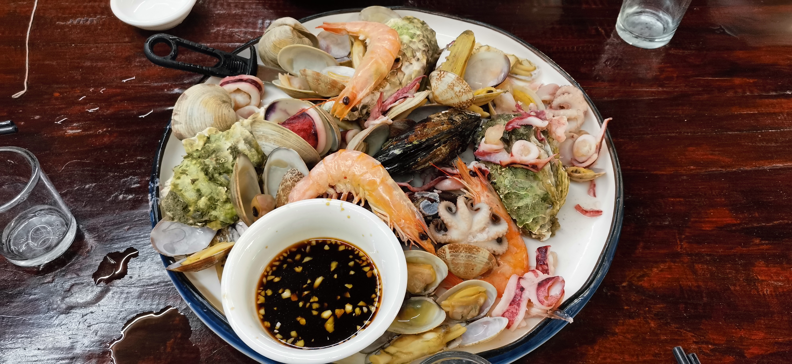
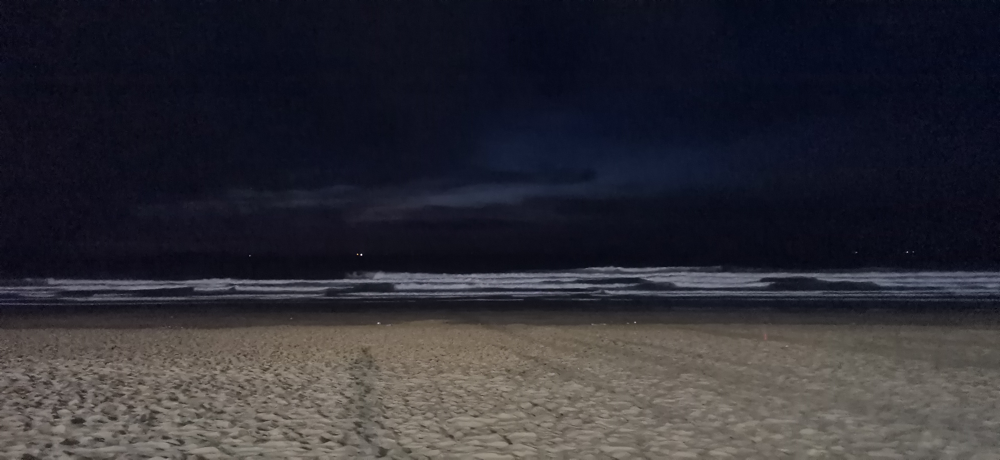
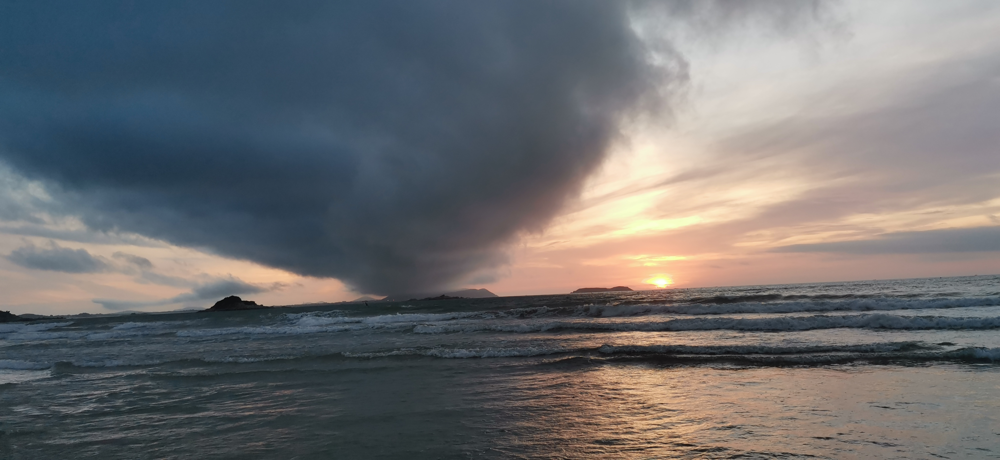

去完舟山就想去平潭想得不得了 回来终于光速去了
虽然已经前后去了五六次但每次去都有新收获 很快乐很开心
因为回家了所以系列名也暂时改了 jjpd是不孤独传说惹
总而言之就是他诺西 这次也代到了（赞赏
虽然这次也是无修 但是因为太好看了所以不需要修（确信
07.15
3：30 P.M.
因为天气太热于是选了下午出发 但依旧阳光明媚 湛蓝的天空给这次旅行开了个好头 也埋下了伏笔（
大片的积云看着很有压迫力 一度担心会不会下雨 但最终还是放了我们一马
上岛经过了前几年新修的公铁大桥 虽然桥下已经是海了但因为两边都装了挡风装置所以并不能拍出很好的景
真的好长 怎么有桥要开十几公里的

看到叫公铁大桥才意识到平潭已经通高铁了 我深深震撼
现在的路也修得好宽 全是快速路 真的只有来了这么多次后才会意识到它发展的有多快
想当年还是平潭县 上岛还得过轮渡 海滩啥的通通没有开发就突出一个野
现在已经是综合试验区了 游客也多起来 管理也跟上了
感慨啊 变化真的大
5：00 P.M.
第一晚入住的是北港那边的民宿 因为就在海边 所以是很有平潭特色的石厝建筑
北港村也算是游客比较集中的地方了 基本上整个村里都是本地人开的民宿
我们住的那家算是视野比较开阔的了 刚好和前面地势比较低的房子错开 海面一览无遗 老板人也蛮好 会做生意👍
但jjpd从不植入软广 所以就不提名字了（
其实每家人住的也不是特别多 一般也就只有几间房 办入住的时候和老板聊了聊 接下来几天都已经售罄了 真的火爆
因为计划去看日落 所以办完入住放下行李就匆匆出门了 北港背靠的好像是君山 路上雾气弥漫 梦回台湾清境
有一说一 北港附近的路修的还挺好的 有配套的观景步道 一路上随时可以停下来看海景 也有蛮多人租电动车骑行的 也难怪这边能开起来这么多民宿
6：00 P.M.
离北港不远就是长江澳，因为那片装了很多风力发电的风车所以也叫风车田，附近本质上不能下海所以相比之下人其实算少的
之前我们也没来这边看过日落，也是挺新奇的
在沙滩上还看到一只正在爬的螺（
有一说一 这边景我觉得真不错 一排风车剪影加上夕阳和浪花真的好有意境
不过很遗憾的一点是因为云层太厚所以终究还是没能看见落日 果然这种东西还是得靠运气
但是回去的时候刚好看到蛾眉月升起 也是别有一番风味
天色暗了以后我们就直接回北港觅食了 因为民宿多所以连带着餐馆也蛮多
有一说一 我觉得这种自家开的馆子看评分真的有点点不靠谱 看哪家人多进去吃就完事了（
既然来了平潭 那第一餐自然是海鲜 虽然不咋上镜但真的好恰 清蒸yyds

虽然捧一踩一是不对的 但我还是要说 福建海鲜必秒【】（
其实还有其他菜 但吃到后面完全忘记拍照这回事了（海鲜炒粉yyds！（开始了
但 有一说一 上菜真的慢 不催真的就会把你忘记（
上菜慢的后果就是恰完已经九点多了 在村里随便逛了逛回到房间就已经十一点了
不过海边是真的凉快 惬意啊
07.16
5：30 A.M.
本来理论上今天是要早起看日出的（而且民宿就正对着海还朝东 地理位置绝佳
但是呢 天时地利 没有人和
很遗憾 闹钟定完完全没有听见 醒来的时候太阳已经整个出来了 于是我们出门看了一眼又回笼了（摸爆啊
从我们房间的窗户看出去正好能看见太阳
也许是因为太兴奋了 回笼觉我还做了一个诡异至极的梦 醒来的那一刻意识到自己刚刚梦见什么的时候只感受到纯粹的恐惧
太怪了 这合理吗 太吓人了
9：00 A.M.
一觉就直接睡到九点 笑死
因为前一晚问了下老板附近有没有早餐店 于是老板很爽快地说可以连我们的一起做
虽然就是很家常的白粥馒头油条之类的东西 但还是很谢谢
老板格局大了（
吃完收拾收拾就准备退房了 但是这么好的天气不拍几张pio怎么行呢（
于是去旁边的露台拍了几张 我生下来就单推pio了.jpg
顺便 刚好ad挂件到了 于是也一起带出门了（
因为行程安排比较宽松（这就是来了好几趟的余裕吗） 于是早上我们就继续沿着环岛路走走停停
一路上看到的都是湛蓝的海 真的心旷神怡
不过路上看到的海估计实际都离岸蛮远 所以海上作业平台啥的蛮多的 看起来也更工业化一点 也是一种特色就是了
在车上也忍不住拍 gsc体看起来真的好乖 kawaii————
顺路就又去了一趟长江澳 大白天看又是一种感觉

我真的对这种大型机械没有抵抗力 suki
不过白天长江澳的游客明显少了挺多 也可能是因为太热 这下去大概回来能直接晒脱层皮 我们也就随便逛了逛就转战下一个地方
话说回来 一路上感觉平潭其实还是挺缺水的 土也很少 都是沙子 能长起来的都是用来防风固沙的一些植被
北部的生态廊道大概因为是专门打造养护的 所以植物什么的长的还挺茂密 整个步道就修在一个靠海的山包上 风景倒也挺好
感觉 平潭其实就很适合三五个朋友随便抽个周末来走走逛逛散散心 像旅游团那种打卡玩法就其实不太能体验到它的美好 太快了
不过像石牌洋之类的景点确实去拍个照也就行了 虽然很著名但我觉得平潭的好在这些景点身上就 还是体现不太出来
主要是 石牌洋 它远观全景确实很好看啦 但是坐船过去到那石头底下 真的 全是人 就 也拍不出来什么东西
但毕竟是个地标景点一样的东西 来都来了.jpg
11：30 A.M.
上午逛的差不多了 我们也就直接进了平潭县城入住酒店 城区里车和人一下子就多了起来 还带来一种独属于县城的热闹
吃过午饭正是一天最热的时候 我们也就很识相地没有出门
于是直接在酒店睡到了下午四点 乐了
4：30 P.M.
下午 太阳终于不太大了 刚好我们住的地方离龙凤头比较近 就去凑凑热闹
龙凤头这片海滩也算是平潭比较出名的了 不夸张的说 我们也是看着这里逐渐从野海（？）变成有管理的海滨浴场而后逐渐附加上更多的商业气息
但这也是没办法的就是了
人 是真的多 用福建特有形容就是“插蛏” 虽然已经有预料但看到还是mindcrush（
不过人多倒也没太影响心情 玩就完事了
记得去年国庆来平潭的时候就是在这里进行了申必的同人女祈福仪式 然后居然真的吃到了粮
很遗憾 今年人太多不敢丢人也就没有复刻 感觉离饿死不远了（
因为这边海滩是朝东的 所以我们也没想着看落日 逛了一个多小时就回了酒店 收拾了一下就去寻找晚饭
不得不说我们对吃的是真没有追求 这种时候我们想吃的居然只是一碗白粥
然而很遗憾 没有给我们这个实现愿望的机会 只好退而求其次（？）吃了海鲜粥
不得不说 平潭这边无论景点还是城内 菜的分量都好足 不管什么东西都是一大盘一大盘 十分实诚
8：00 P.M.
接下来是避雷time
我要说的只有一句话：
别 去 海 坛 古 城
没有见过这么失败的商业项目 整个就是一个笑话 随便整个小吃街都比这做的好
完全砸自己招牌的一个地方 我都不懂怎么还敢把这玩意称为景点的
不如把那些不三不四的仿古建筑推了建个给市民活动休闲的广场
我就感觉我浪费了一个晚上 我都不知道怎么还有这么多人来
完全没有把平潭特色的东西展现出来 跟风搞什么历史底蕴我真的是没有话讲
反正整个环境也特别嘈杂 店铺内容重合性极高 也没有什么能激起人购买欲望的店 事实上大部分店面也是门可罗雀
就这样还能看见有一大片区域还处于待规划状态 就不懂建这么大地方是要拿来干啥
真的会有人给这地方好评吗 我真的不信
气死我了
07.17
4：00 A.M.
终于成功挣扎起来看日出
沙滩上蛮多人租帐篷的 倒也挺热闹
有一说一 第一次在天还完全黑的时候在海边等日出
凌晨的浪是真的大 感觉平时到脚踝的浪当时同样位置有半人高
漆黑的夜色里看着汹涌的海浪朝岸边扑来 听着震人心魄的海浪声 真的会掉san值
就感觉如果这时候一只触手从浪花中探出我真的会接受这个事实
大半夜的大海真的很克 即使现在回想起当时的场景还是会一阵心悸
人在自然面前真的渺小得可怕

不过没过多久就能看见海天交会的地方出现隐隐的紫红 浪也渐渐变小 仿佛一切归于平静
日出一旦开始就进度飞快 上一刻才刚刚看见一点微光 下一刻已经天色蒙蒙亮
朝霞真的很好看
但当时的天气确实也不是最佳 事实上还是有厚厚的云层 并不能看到完美蛋黄（
但看点经典日出以外的品种（？）也不失为一种体验
当时的云的形状其实也蛮特别的 有种旋风的感觉
单看云也很震撼

看完日出因为酒店离的挺近就又狂暴回笼觉轰入
代价就是又做了一些非常奇怪的梦
我不就是睡前口嗨了点不是我cp的东西吗 为什么要让我梦见拆家 为什么
关键是还画很好 我好生气啊呜呃
10：00 A.M.
醒来恰过早饭开始最后半天的行程 最终选定了猴岩岛作为我们的旅途终点
其实风景还挺好的 就是经典礁石岛屿的风景 视野很开阔
但是好热 真的好热 我整个人被融化
整个景区还蛮大的 我们走了一个多小时也才逛了一半
本来还打算再去平潭岛上最大的淡水湖看看 结果不知道是导航出错还是确实不开放了导致我们开到了水库区域禁止入内的牌子前面
打扰了 缓缓后退（
因为走了岔路所以时间也快中午 想想好像该逛的也都逛过了 我们就直接开车踏上回家的路程
完结撒花（鼓掌
一些语无伦次的总结：我是真的好喜欢好喜欢大海，就算从小看到大也无法减淡我对海的热爱，每次看都是全新的体验。也许我热爱大海只是因为在海面前我什么都不是，又什么都可以是，空无一物的海面给了我一个审视自己的机会，让我得以找到一处无人打扰的空间回顾自己的过往，重新认识自己。海对我而言就是心安之处，是我可以放下所有敞开心扉的地方。事实上，我觉得人需要每隔一段时间就对自己敞开心扉。不然有的时候真的会连自己都骗过。
我爱大海。
umi love